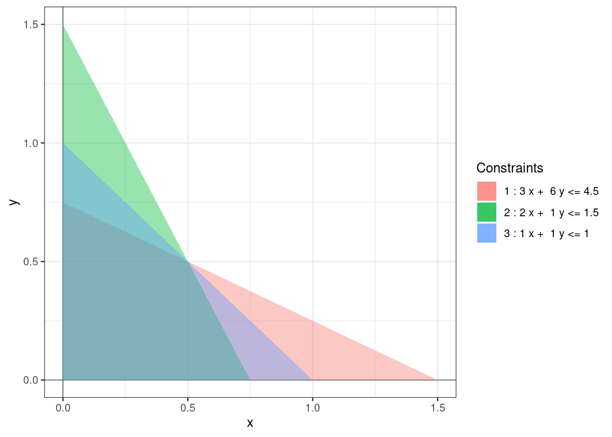

Chapter 5 Cycling
We know how to start the simplex method and how to perform the pivot steps. We’ll next analyze the halting conditions for the simplex method. We will not be able to perform the pivot steps if no entering or leaving variables are found.
If no entering variable is found, then the geometry tells us that there is no direction in which the objective value can be increased i.e. we’re at a local maxima. But because the objective function is a linear function this local maxima is also an absolute maxima and provides an optimal solution to our linear program. Algebraically, this happens when none of the \(\bar{c}_i\) are positive.
Proposition 5.1 If none of the objective coefficients \(\bar{c}_i\) are positive in the current dictionary, then the current BFS is optimal.
If no leaving variable is found, then the geometry tells us that we can keep increasing the entering variable indefinitely without leaving the feasible region. Such a linear program is called unbounded. An unbounded linear program has no optimal solution as the objective value can be made arbitrary large without leaving the feasible region. Algebraically, this happens when none of the \(\bar{a}_{ij}\) are positive.
Proposition 5.2 Suppose \(\bar{x}_j\) is the entering variable. If none of the constants \(\bar{a}_{ij}\) are positive in the current dictionary, then the linear program is unbounded.
Another point of failure is in the initialization phase. We’ve already seen that if the initialization phase fails then there is no feasible solution. We restate the result here for completion.
Proposition 5.3 If some \(b_i\) is negative, and the initialization phase fails then the linear program is infeasible.
Unfortunately, the above results are not sufficient to guarantee that the simplex method will always find a solution if one exists. It is possible for the simplex method to get stuck in a loop. This is called cycling.
Exercise 5.1 Give an example showing that the variable that enters in one pivot step can become leave in the next.
Exercise 5.2 Show that the variable that leaves in one pivot step cannot enter in the next.
5.1 Degeneracy
Cycling does not always occur when running the simplex method. We saw in Section 3.1 that after the pivot step the entering and leaving variable gets updated as follows: \[\begin{align*} \bar{x}_j & \mapsto \bar{b}_i/\bar{a}_{ij} \\ \bar{w}_i & \mapsto 0. \end{align*}\] This increases the value of the objective function by \(\bar{c}_j \bar{b}_i/\bar{a}_{ij}\). Because of the criterion for choosing the entering and leaving variables, the constants \(\bar{c}_i\) and \(\bar{a}_{ij}\) are always positive. We know that \(\bar{b}_i\) this is the value of the basic variable \(\bar{w}_i\) and hence must be greater than or equal to 0. If \(\bar{b}_i > 0\) then the objective value will increase in the pivot step and we will never return back to this BFS. Hence, the only case when cycling can occur is when \(\bar{b}_i = 0\). But \(\bar{b}_i\) is the value of the basic variable \(\bar{w}_i\). Having more than \(n\) variables vanishing at a BFS is precisely the definition of degeneracy 2.3.
Proposition 5.4 The simplex method can cycle if there some degenerate BFS.
Example 5.1 The following slight modification of Example (1.2) is a degenerate linear program: \[\begin{equation*} \begin{array}{rrrrrl} \mbox{maximize:} & 4x & + & 3y \\ \mbox{subject to:} & 3x & + & 6y & \le & 4.5 \\ & 2x & + & y & \le & 1.5 \\ & x & + & y & \le & 1 \\ & x & , & y & \ge & 0. \end{array} \end{equation*}\]

At the optimal solution, \((0.5, 0.5)\) all three constraints are met. At this BFS, one of the rows is \[\begin{align} w_3 &= 0 + 0.33 w_2 + 0.11 w_1. \end{align}\]
Example 5.2 Consider the following degenerate linear program: \[\begin{equation*} \begin{array}{rrrrrrrrrl} \mbox{maximize:} & x_1 & - & 2x_2 & & & - & 2x_4 \\ \mbox{subject to:} & 0.5 x_1 & - & 3.5x_2 & - & 2x_3 & + & 4 x_4 & \le & 0 \\ & 0.5 x_1 & - & x_2 & - & 0.5 x_3 & + & 0.5 x_4 & \le & 0 \\ & x_1 & & & & & & & \le & 1 \\ & x_1 & , & x_2 & , & x_3 & , & x_4 & \ge & 0 \\ \end{array} \end{equation*}\] The following is a valid sequence of simplex steps:
- \(x_1\) enters and \(w_1\) leaves,
- \(x_2\) enters and \(w_2\) leaves,
- \(x_3\) enters and \(x_1\) leaves,
- \(x_4\) enters and \(x_2\) leaves,
- \(w_1\) enters and \(x_3\) leaves,
- \(w_2\) enters and \(x_4\) leaves.
At the end of the \(6^{th}\) simplex step, we end up looping back to the origin.
5.2 Bland’s Rule
There are various ways of dealing with cycling. The simplest such way is called Bland’s rule. Bland’s rule says that if there are multiple candidates for the entering/variable then we choose the one with the smallest index. (We assume that the decision variables have a smaller index than the slack variables.)
Theorem 5.1 (Bland's rule) The simplex method always terminates provided that both the entering and the leaving variable are chosen according to Bland’s rule.
The proof of this theorem is too complicated for this course. With this modification, for both Phase I and Phase II of the simplex method, we now have a complete algorithm for solving linear programs.
Example 5.3 In Example 5.2, the sixth simplex step violates Bland’s rule. Both \(x_1\) and \(x_4\) can be leaving variables and we choose \(x_4\) whereas Bland’s rule requires us to choose \(x_1\).